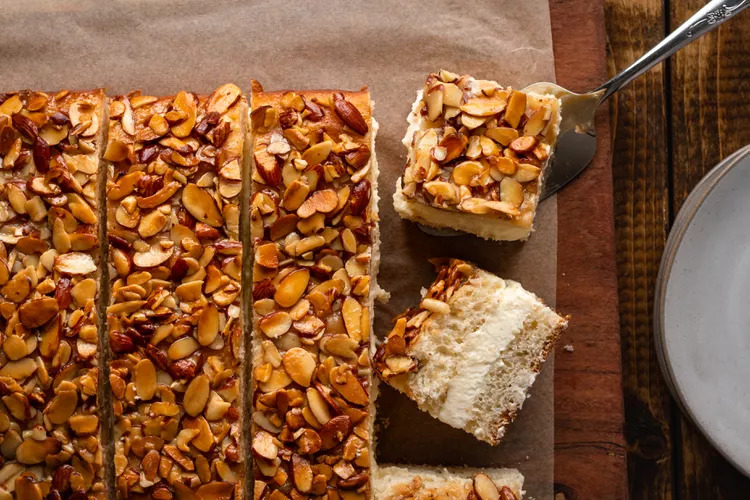

Bienenstich Kuchen (Bee Sting Cake)

Description
This traditional honey almond cake, known for its irresistible combination of soft, buttery layers and a luscious honey-almond topping, is a true treat for dessert enthusiasts.
The cake's name, Bienenstich, translates to "bee sting," alluding to the sweet, sticky honey glaze that crowns the deliciously golden surface. Each forkful reveals a harmonious
blend of rich pastry cream nestled between layers of tender cake, creating a symphony of flavors and textures. Bienenstich Kuchen is not just a cake; it's a celebration of
Germany's sweet culinary heritage. Whip up this decadent masterpiece in your own kitchen and savor the essence of German baking perfection! The cake takes about 1 1/2 hours
of total hands-on time, 50 minutes to bake, and a few hours to chill the pastry cream and cool the cake. To make things a little easier, you might want to make the cake
and/or the filling the day before assembling it. The original recipe can be found
here.
Ingredients
For the Pastry Cream:
- 340 milliliters half-and-half
- 90 grams granulated sugar
- 1/2 vanilla bean
- 2 large eggs, at room temperature
- 1 large egg yolk, at room temperature
- 30 grams all-purpose flour
- 1/4 teaspoon salt
- 226 milliliters heavy whipping cream
For the Cake:
- 2 teaspoon instant yeast
- 500 grams all-purpose flour
- 100 grams unsalted butter
- 75 grams honey
- 226 milliliters milk, lukewarm but not hot
- 1 large egg, at room temperature
- 1/2 teaspoon salt
For the Almond Topping:
- 50 grams sugar
- 125 grams honey
- 125 grams unsalted butter
- 150 to 200 grams almond slices or slivers
- 1/2 teaspoon pure vanilla extract
Steps
Make the Pastry Cream
- In a medium saucepan over medium-low heat, combine the half-and-half, sugar, and vanilla bean. Stir constantly to dissolve the sugar.
- In a small bowl, whisk together the 2 eggs, egg yolk, flour, and salt until smooth.
- Temper the egg mixture by adding 1/4 to 1/2 cup of the hot half-and-half mixture to the eggs, whisking constantly.
- Pouring in a thin stream and whisking constantly, stir the egg mixture into the saucepan with the remaining hot half-and-half mixture.
- Keep stirring until the mixture starts to thicken; do not let it boil. When it is thick enough to coat the back of a spoon, remove it from heat.
- Pour the pastry cream into a bowl set on top of an ice-cube-filled bowl. Stir several times.
- Place plastic wrap over the pastry cream so that it touches the surface to prevent a skin from forming. When the pastry cream has cooled down some,
remove it from the ice bath and store it in the refrigerator until ready to assemble.
Note: The heavy whipping cream will be incorporated into the pastry cream when assembling the cake.
Make the Cake Dough
- In a large bowl, whisk together the instant yeast and flour.
- In a microwave-safe bowl, heat the butter and honey in the microwave until just melted. Stir in the lukewarm milk.
Add the egg and salt and whisk well. This mixture should have a temperature of 38 C.
- Add the liquid mixture to the bowl of flour and yeast. Mix on low in a stand mixer (or with a wooden spoon) until a shaggy dough forms.
- Knead until the dough becomes smooth and pliable and comes away from the bowl.
- Form the dough into a ball, oil the surface, and place in a clean bowl.
- Cover with a clean cloth or plastic wrap and let rise in a warm place for 40 minutes to 1 hour, or until doubled in bulk.
Make the Almond Topping
- In a small saucepan, combine the sugar, honey, and butter. Heat and stir until the sugar dissolves and the mixture comes to a
boil. Continue boiling for several minutes, stirring constantly so it doesn't burn.
- Add the almonds and vanilla extract, stirring to coat.
- Remove from heat and cool until lukewarm.
Bake the Cake
- Preheat the oven to 180 C. Coat a 13 x 9-inch pan with cooking spray. Roll the risen dough out into a 13 x 9-inch rectangle.
- Place the dough in the pan, pushing it so the edges are slightly higher than the middle.
- Spread the lukewarm almond topping evenly over the top of the dough.
- Bake for 45 to 50 minutes. Test for doneness by sticking a toothpick in the center of the cake; if it comes out clean, the cake is done. Remove from
oven and let the cake cool completely. Using 2 spatulas, carefully remove the entire cake from the pan, moving it to a waxed paper-coated surface or cutting board.
Assemble the Cake
- Whip 1 cup heavy whipping cream until very stiff but stop whipping before it becomes clumpy and starts to turn into butter.
- Stir a third of the whipped cream into the cold pastry cream to lighten it, then carefully fold the rest into the pastry cream, trying not to deflate the volume.
- Using a serrated knife, cut the cake in half horizontally.
- Remove the top half and set it aside. Spread the pastry cream over top of the bottom of the cake.
- Put the top back on the cake. Serve immediately or place in the refrigerator, which helps the pastry cream set up.
Home